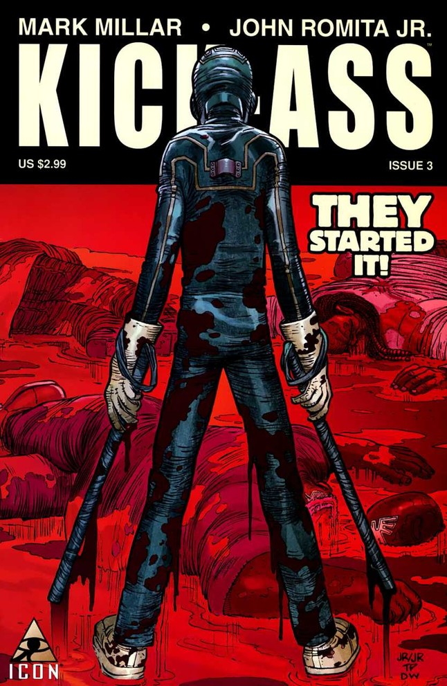

Kick-Ass is the name of two fictional superheroes serving as the title characters and the protagonists of the Kick-Ass series, published by Marvel Comics under the company’s imprint Icon Comics, and by Image Comics. The duo was created by artist John Romita Jr. and writer Mark Millar. Prior to the The Dave Lizewski Years series, Dave Lizewski is a high school student and comic book fan whose dreams inspire him to become a real-life superhero, going by the name "Kick-Ass", with no superpowers or training of any kind, while prior to the The New Girl series, Patience Lee is an Afghanistan war veteran and single mother who dons the Kick-Ass costume and mantle to steal money from various crime bosses for her family. The Dave Lizewski version of Kick-Ass appeared in the feature film adaptations Kick-Ass and Kick-Ass 2 portrayed by Aaron Taylor-Johnson.